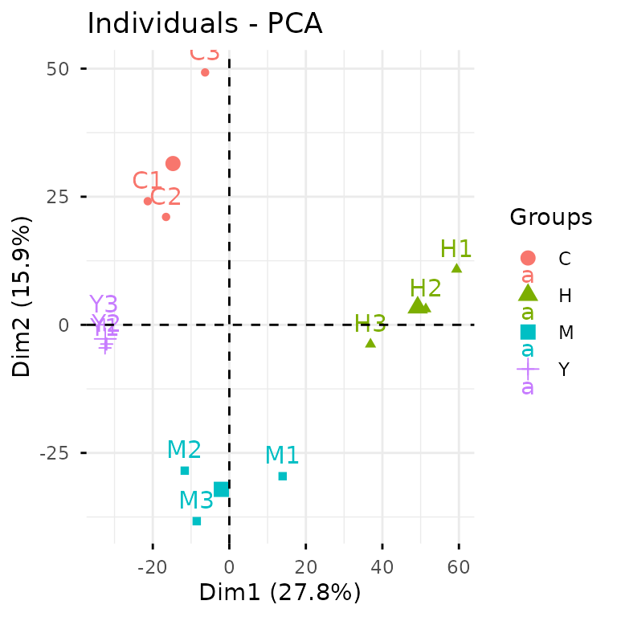
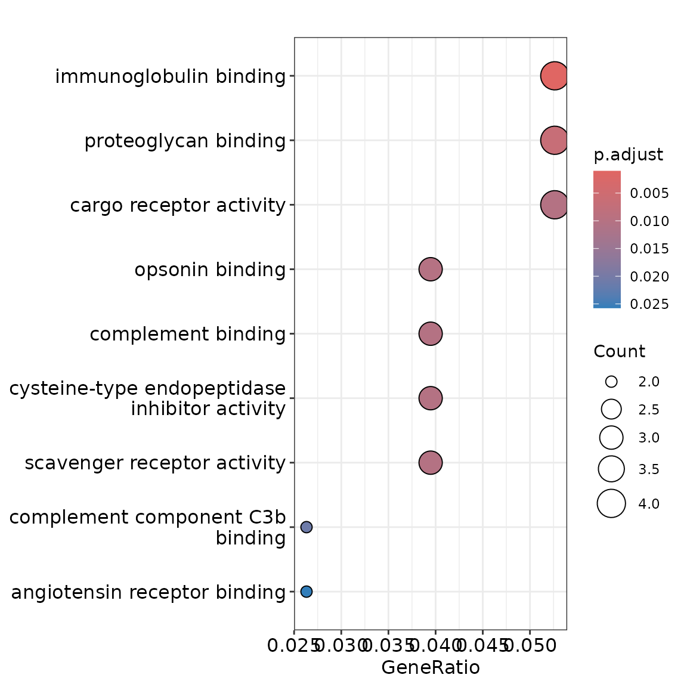
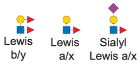
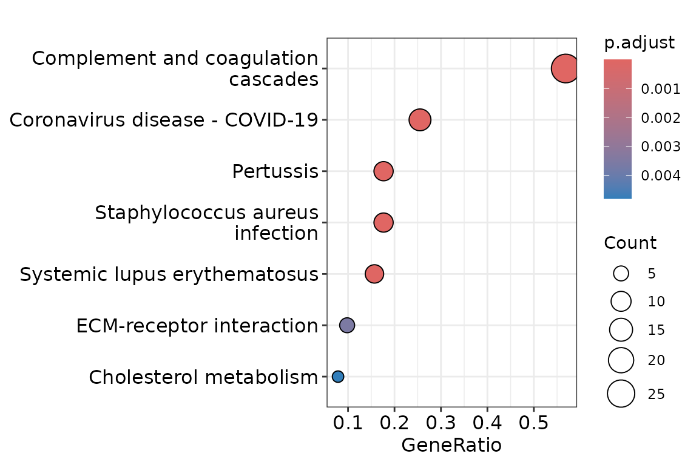

Case Study: Glycoproteomics
case-study-1.RmdThis vignette walks you through a complete glycoproteomics analysis
using glycoverse. We’ll explore the full spectrum of
glycoproteomics data analysis, from data loading and preprocessing to
statistical analysis and visualization. We’ll also dive into advanced
glycan structure analysis, including motif quantification and derived
trait analysis. Ready to dive in? Let’s go!
Heads up: glycoverse is built on
tidy principles throughout. If you’re new to
tidyverse data analysis, we highly recommend checking out
Hadley Wickham’s excellent R for Data
Science. Trust us, it’s worth the investment!
Quick readiness check:
- What’s a
tibble? - How do you filter rows in a
tibble? - What’s the modern alternative to
forloops? - What’s the
%>%operator? Do we still need it? - What makes data “tidy”?
Loading the Packages
Just like tidyverse, glycoverse is a
meta-package that loads a collection of specialized packages all at
once.
library(glycoverse)
#> ── Attaching core glycoverse packages ───────────────── glycoverse 0.0.0.9000 ──
#> ✔ glyclean 0.6.4 ✔ glyparse 0.4.4
#> ✔ glydet 0.2.0 ✔ glyread 0.6.1
#> ✔ glyenzy 0.2.2 ✔ glyrepr 0.7.2
#> ✔ glyexp 0.9.1 ✔ glystats 0.4.2
#> ✔ glymotif 0.7.0 ✔ glyvis 0.1.2
#> ── Conflicts ───────────────────────────────────────── glycoverse_conflicts() ──
#> ✖ glyclean::aggregate() masks stats::aggregate()
#> ℹ Use the conflicted package (<http://conflicted.r-lib.org/>) to force all conflicts to become errorsWe’ll also need the tidyverse packages for this
analysis.
library(tidyverse)
#> ── Attaching core tidyverse packages ──────────────────────── tidyverse 2.0.0 ──
#> ✔ dplyr 1.1.4 ✔ readr 2.1.5
#> ✔ forcats 1.0.0 ✔ stringr 1.5.2
#> ✔ ggplot2 4.0.0 ✔ tibble 3.3.0
#> ✔ lubridate 1.9.4 ✔ tidyr 1.3.1
#> ✔ purrr 1.1.0
#> ── Conflicts ────────────────────────────────────────── tidyverse_conflicts() ──
#> ✖ dplyr::filter() masks stats::filter()
#> ✖ dplyr::lag() masks stats::lag()
#> ✖ dplyr::select_var() masks glyexp::select_var()
#> ℹ Use the conflicted package (<http://conflicted.r-lib.org/>) to force all conflicts to become errorsReading the Data
Data import is typically your first step in any analysis. For this
tutorial, we’ll use the real_experiment dataset that comes
with glyexp. This is a real-world N-glycoproteomics dataset
from 12 patients across four liver conditions: healthy controls (H),
hepatitis (M), cirrhosis (Y), and hepatocellular carcinoma (C), with 3
samples per condition.
real_experiment
#>
#> ── Experiment ──────────────────────────────────────────────────────────────────
#> ℹ Expression matrix: 12 samples, 4262 variables
#> ℹ Sample information fields: group <chr>
#> ℹ Variable information fields: peptide <chr>, peptide_site <int>, protein <chr>, protein_site <int>, gene <chr>, glycan_composition <comp>, glycan_structure <struct>For your own projects, the glyread package can import
data from virtually any mainstream glycoproteomics software—pGlyco3,
MSFragger-Glyco, Byonic, you name it. Each software has its own
dedicated import function. For instance, data from pGlyco3 with
pGlycoQuant quantification can be loaded using
read_pglyco3_pglycoquant(). Check out Get
Started with glyread for the full rundown.
The real_experiment object (like all outputs from
glyread functions) is an experiment() object.
If you’ve worked with SummarizedExperiment from
Bioconductor, think of experiment() as its tidy cousin.
Essentially, it’s a smart data container that manages three key
components:
- Expression matrix: quantitative data with samples as columns and variables as rows
- Sample information: a tibble with sample metadata (group, batch, demographics, etc.)
- Variable information: a tibble with feature metadata (proteins, peptides, glycan compositions, etc.)
You can get these data components by using
get_expr_mat(), get_sample_info(), and
get_var_info().
get_expr_mat(real_experiment)[1:5, 1:5]
#> C1 C2 C3 H1 H2
#> GP1 NA NA 10655.62 3.105412e+04 NA
#> GP2 414080036 609889761 78954431.49 NA 11724908
#> GP3 581723113 604842244 167889901.32 6.977076e+08 703566323
#> GP4 3299649335 2856490652 957651065.86 2.600523e+09 3229968280
#> GP5 30427048 34294394 6390129.81 5.159133e+07 37479075
get_sample_info(real_experiment)
#> # A tibble: 12 × 2
#> sample group
#> <chr> <chr>
#> 1 C1 C
#> 2 C2 C
#> 3 C3 C
#> 4 H1 H
#> 5 H2 H
#> 6 H3 H
#> 7 M1 M
#> 8 M2 M
#> 9 M3 M
#> 10 Y1 Y
#> 11 Y2 Y
#> 12 Y3 Y
get_var_info(real_experiment)
#> # A tibble: 4,262 × 8
#> variable peptide peptide_site protein protein_site gene glycan_composition
#> <chr> <chr> <int> <chr> <int> <chr> <comp>
#> 1 GP1 JKTQGK 1 P08185 176 SERP… Hex(5)HexNAc(4)Ne…
#> 2 GP2 HSHNJJSS… 5 P04196 344 HRG Hex(5)HexNAc(4)Ne…
#> 3 GP3 HSHNJJSS… 5 P04196 344 HRG Hex(5)HexNAc(4)
#> 4 GP4 HSHNJJSS… 5 P04196 344 HRG Hex(5)HexNAc(4)Ne…
#> 5 GP5 HJSTGCLR 2 P10909 291 CLU Hex(6)HexNAc(5)
#> 6 GP6 HSHNJJSS… 5 P04196 344 HRG Hex(5)HexNAc(4)Ne…
#> 7 GP7 HSHNJJSS… 6 P04196 345 HRG Hex(5)HexNAc(4)
#> 8 GP8 HSHNJJSS… 5 P04196 344 HRG Hex(5)HexNAc(4)dH…
#> 9 GP9 HSHNJJSS… 5 P04196 344 HRG Hex(4)HexNAc(3)
#> 10 GP10 HSHNJJSS… 5 P04196 344 HRG Hex(4)HexNAc(4)Ne…
#> # ℹ 4,252 more rows
#> # ℹ 1 more variable: glycan_structure <struct>What makes experiment() objects so powerful?
Universal compatibility: All
glycoversefunctions speak the same language. They automatically know where to find what they need in anexperiment()object, which eliminates the biggest headache in data analysis: constantly reformatting data to meet different function requirements.Synchronized operations: You can use familiar
dplyr-style functions to filter, select, and modify your data, and everything stays in sync automatically. No more worrying about mismatched sample names or lost metadata!
We’ll see these benefits in action throughout this tutorial. For a
deeper dive into experiment() objects, check out Get
Started with glyexp.
Data Preprocessing
Raw quantification data needs preprocessing before analysis—that’s
just a fact of life in omics. Typical steps include normalization,
missing value imputation, and batch effect correction. Rather than
making you implement these tedious steps manually, glyclean
provides a comprehensive preprocessing pipeline. Just call
auto_clean() on your experiment() object and
you’re good to go.
clean_exp <- auto_clean(real_experiment)
#> ℹ Normalizing data (Median)
#> ✔ Normalizing data (Median) [134ms]
#>
#> ℹ Removing variables with >50% missing values
#> ✔ Removing variables with >50% missing values [22ms]
#>
#> ℹ Imputing missing values
#> ℹ Sample size <= 30, using sample minimum imputation
#> ℹ Imputing missing values✔ Imputing missing values [25ms]
#>
#> ℹ Aggregating data
#> ✔ Aggregating data [801ms]
#>
#> ℹ Normalizing data again
#> ✔ Normalizing data again [16ms]Your data is now analysis-ready!
Want to customize the preprocessing steps? See Get Started with glyclean for the full toolkit.
Statistical Analysis and Visualization
Time for the fun part—statistical analysis and visualization! We’ll
use glystats for the number crunching and
glyvis to make sense of the results visually.
Let’s kick off with PCA to get a bird’s-eye view of our data structure.
plot_pca(clean_exp) # from `glyvis`
glyvis isn’t designed for publication-ready figures, but
it’s perfect for quick exploratory visualization. Behind the scenes,
plot_pca() calls gly_pca() from
glystats and renders the results.
You can also break this down into separate steps:
pca_res <- gly_pca(clean_exp) # from `glystats`
autoplot(pca_res) # from `glyvis`
We actually recommend the two-step approach, since it gives you more
flexibility with the results. You can create custom ggplot2
visualizations for publications or extract the underlying data when
reviewers ask for it.
glystats covers virtually all standard omics analyses.
All functions follow the same naming pattern:
gly_xxx()—think gly_anova(),
gly_ttest(), gly_roc(),
gly_cox(), gly_wgcna(), and so on. They all
take an experiment() object as their first argument.
The return format is consistent across all functions—a list with two components:
-
tidy_result: cleaned-up tibbles in tidy format. We’ve done the heavy lifting of organizing messy statistical output for you. -
raw_result: the original statistical objects. These are available when you need to dig deeper or perform advanced analyses.
Let’s peek inside the pca_res object we just
created:
str(pca_res, max.level = 2)
#> List of 2
#> $ tidy_result:List of 3
#> ..$ samples : tibble [144 × 4] (S3: tbl_df/tbl/data.frame)
#> ..$ variables : tibble [46,560 × 8] (S3: tbl_df/tbl/data.frame)
#> ..$ eigenvalues: tibble [12 × 4] (S3: tbl_df/tbl/data.frame)
#> $ raw_result :List of 5
#> ..$ sdev : num [1:12] 32.8 24.8 21.3 18.6 16.8 ...
#> ..$ rotation: num [1:3880, 1:12] -0.0128 -0.0249 0.0154 0.0129 0.0175 ...
#> .. ..- attr(*, "dimnames")=List of 2
#> ..$ center : Named num [1:3880] 13.5 17.7 20.1 21.8 17.3 ...
#> .. ..- attr(*, "names")= chr [1:3880] "V1" "V2" "V3" "V4" ...
#> ..$ scale : Named num [1:3880] 3.502 2.742 0.507 0.421 0.57 ...
#> .. ..- attr(*, "names")= chr [1:3880] "V1" "V2" "V3" "V4" ...
#> ..$ x : num [1:12, 1:12] -21.32 -16.54 -6.33 59.42 51.35 ...
#> .. ..- attr(*, "dimnames")=List of 2
#> ..- attr(*, "class")= chr "prcomp"
#> - attr(*, "class")= chr [1:2] "glystats_pca_res" "glystats_res"As you can see, pca_res$tidy_result contains three tidy
tibbles, while pca_res$raw_result holds the original
prcomp object from stats::prcomp(). Check
?gly_pca for the complete breakdown.
Here’s what the samples tibble looks like:
pca_res$tidy_result$samples
#> # A tibble: 144 × 4
#> sample group PC value
#> <chr> <chr> <dbl> <dbl>
#> 1 C1 C 1 -21.3
#> 2 C1 C 2 24.1
#> 3 C1 C 3 0.965
#> 4 C1 C 4 1.89
#> 5 C1 C 5 -11.2
#> 6 C1 C 6 25.8
#> 7 C1 C 7 -6.01
#> 8 C1 C 8 -5.10
#> 9 C1 C 9 27.8
#> 10 C1 C 10 -7.09
#> # ℹ 134 more rowsNotice the “group” column? That’s glystats being
helpful— it automatically pulls relevant metadata from your
experiment() object and includes it in the results wherever
it makes sense.
Back to that autoplot() magic we saw earlier. It
automatically recognizes different glystats result types
and plots accordingly— no manual specification needed. The plots won’t
win any beauty contests, but they’ll get your data insights across
fast.
The PCA clearly shows that our samples cluster nicely by
condition—always a good sign! Now let’s dive into differential
expression analysis using the tried-and-true limma
package.
limma_res <- gly_limma(clean_exp) # from `glystats`
#> ℹ Number of groups: 4
#> ℹ Groups: "C", "H", "M", and "Y"
#> ℹ Performing multi-group limma analysis with 4 groups
limma_res$tidy_result
#> # A tibble: 23,280 × 13
#> variable protein gene glycan_composition
#> <chr> <chr> <chr> <comp>
#> 1 V1 P08185 SERPINA6 Hex(5)HexNAc(4)NeuAc(2)
#> 2 V1 P08185 SERPINA6 Hex(5)HexNAc(4)NeuAc(2)
#> 3 V1 P08185 SERPINA6 Hex(5)HexNAc(4)NeuAc(2)
#> 4 V1 P08185 SERPINA6 Hex(5)HexNAc(4)NeuAc(2)
#> 5 V1 P08185 SERPINA6 Hex(5)HexNAc(4)NeuAc(2)
#> 6 V1 P08185 SERPINA6 Hex(5)HexNAc(4)NeuAc(2)
#> 7 V2 P04196 HRG Hex(5)HexNAc(4)NeuAc(1)
#> 8 V2 P04196 HRG Hex(5)HexNAc(4)NeuAc(1)
#> 9 V2 P04196 HRG Hex(5)HexNAc(4)NeuAc(1)
#> 10 V2 P04196 HRG Hex(5)HexNAc(4)NeuAc(1)
#> # ℹ 23,270 more rows
#> # ℹ 9 more variables: glycan_structure <struct>, protein_site <int>,
#> # log2fc <dbl>, AveExpr <dbl>, t <dbl>, p <dbl>, p_adj <dbl>, b <dbl>,
#> # contrast <chr>Excellent! Now let’s identify significantly differentially expressed glycoforms between HCC and healthy samples, then see what biological pathways they’re involved in.
sig_vars <- limma_res$tidy_result |>
filter(p_adj < 0.05, contrast == "C_vs_H") |>
pull(variable)
go_res <- clean_exp |>
filter_var(variable %in% sig_vars) |>
gly_enrich_go()
#>
#>
autoplot(go_res)
And that’s it—pathway enrichment in just a few lines! For the full statistical arsenal, check out Get Started with glystats and Get Started with glyvis.
Understanding Your Data Better
That last code chunk showcased some powerful glyexp
features. Let’s take a moment to understand what’s really happening
under the hood.
First, what exactly are those sig_vars? At first glance,
they look pretty cryptic:
sig_vars[1:5]
#> [1] "V2" "V7" "V10" "V11" "V13"Let’s revisit the variable information tibble:
get_var_info(clean_exp)[1:5, ]
#> # A tibble: 5 × 6
#> variable protein gene glycan_composition
#> <chr> <chr> <chr> <comp>
#> 1 V1 P08185 SERPINA6 Hex(5)HexNAc(4)NeuAc(2)
#> 2 V2 P04196 HRG Hex(5)HexNAc(4)NeuAc(1)
#> 3 V3 P04196 HRG Hex(5)HexNAc(4)
#> 4 V4 P04196 HRG Hex(5)HexNAc(4)NeuAc(1)
#> 5 V5 P10909 CLU Hex(6)HexNAc(5)
#> # ℹ 2 more variables: glycan_structure <struct>, protein_site <int>See that first “variable” column? That’s the index column that keeps everything synchronized. It links the variable information tibble to the expression matrix. Take a look at the expression matrix row names:
get_expr_mat(clean_exp)[1:5, 1:5]
#> C1 C2 C3 H1 H2
#> V1 6.626760e+03 2.019159e+04 13432.7 4.072473e+04 1.771879e+04
#> V2 3.744595e+08 5.691652e+08 99531624.5 2.372164e+04 1.422307e+07
#> V3 5.260619e+08 5.644547e+08 211645556.7 9.149818e+08 8.534716e+08
#> V4 2.983928e+09 2.665752e+09 1207235166.5 3.410355e+09 3.918161e+09
#> V5 2.751569e+07 3.200443e+07 8055532.6 6.765746e+07 4.546455e+07Notice how the row names match the “variable” column exactly, in the
same order? The same principle applies to samples—the “sample” column in
sample info matches the expression matrix column names. This is how
experiment() keeps all three data components perfectly
synchronized.
Of course, synchronization only matters when you’re actually
manipulating data. glyexp provides a full suite of
dplyr-style functions for data manipulation. They work just
like regular dplyr functions, but with helpful suffixes:
xxx_obs() functions operate on samples (observations), and
xxx_var() functions work with variables (features).
For instance, let’s filter to just the healthy samples using
filter_obs():
# Filter the data
exp_h <- clean_exp |>
filter_obs(group == "H")The syntax should feel familiar if you know
dplyr::filter(). The magic happens behind the scenes—the
expression matrix updates automatically. Let’s verify the filtering
worked by checking the dimensions:
# Before filtering
cli::cli_text("Number of rows in sample information tibble: {nrow(get_sample_info(clean_exp))}")
#> Number of rows in sample information tibble: 12
cli::cli_text("Number of rows in variable information tibble: {nrow(get_var_info(clean_exp))}")
#> Number of rows in variable information tibble: 3880
cli::cli_text("Dimensions of expression matrix: {ncol(get_expr_mat(clean_exp))} x {nrow(get_expr_mat(clean_exp))}")
#> Dimensions of expression matrix: 12 x 3880
# After filtering
cli::cli_text("Number of rows in sample information tibble: {nrow(get_sample_info(exp_h))}")
#> Number of rows in sample information tibble: 3
cli::cli_text("Number of rows in variable information tibble: {nrow(get_var_info(exp_h))}")
#> Number of rows in variable information tibble: 3880
cli::cli_text("Dimensions of expression matrix: {ncol(get_expr_mat(exp_h))} x {nrow(get_expr_mat(exp_h))}")
#> Dimensions of expression matrix: 3 x 3880In essence, filter_obs() applies
dplyr::filter() to the sample information and automatically
updates the expression matrix to match. filter_var() does
the same for variables. For the complete catalog of
dplyr-style functions, check out this
vignette.
Now that code snippet should make perfect sense:
Advanced Motif Analysis
Up to now, we’ve covered standard glycoproteomics workflows. While
glycoverse certainly streamlines these analyses, it truly
shines when it comes to advanced glycan structure analysis.
Before diving into motifs, let’s get acquainted with
glyrepr::glycan_structure() vectors.
clean_exp$var_info[["glycan_structure"]]
#> <glycan_structure[3880]>
#> [1] NeuAc(??-?)Hex(??-?)HexNAc(??-?)Hex(??-?)[NeuAc(??-?)Hex(??-?)HexNAc(??-?)Hex(??-?)]Hex(??-?)HexNAc(??-?)HexNAc(??-
#> [2] NeuAc(??-?)Hex(??-?)HexNAc(??-?)[HexNAc(??-?)]Hex(??-?)[Hex(??-?)Hex(??-?)]Hex(??-?)HexNAc(??-?)HexNAc(??-
#> [3] Hex(??-?)HexNAc(??-?)Hex(??-?)[Hex(??-?)HexNAc(??-?)Hex(??-?)]Hex(??-?)HexNAc(??-?)HexNAc(??-
#> [4] NeuAc(??-?)Hex(??-?)HexNAc(??-?)Hex(??-?)[Hex(??-?)HexNAc(??-?)Hex(??-?)]Hex(??-?)HexNAc(??-?)HexNAc(??-
#> [5] Hex(??-?)HexNAc(??-?)Hex(??-?)HexNAc(??-?)Hex(??-?)[Hex(??-?)HexNAc(??-?)Hex(??-?)]Hex(??-?)HexNAc(??-?)HexNAc(??-
#> [6] NeuAc(??-?)Hex(??-?)HexNAc(??-?)Hex(??-?)[NeuAc(??-?)Hex(??-?)HexNAc(??-?)Hex(??-?)]Hex(??-?)HexNAc(??-?)HexNAc(??-
#> [7] Hex(??-?)HexNAc(??-?)Hex(??-?)[Hex(??-?)HexNAc(??-?)Hex(??-?)]Hex(??-?)HexNAc(??-?)HexNAc(??-
#> [8] dHex(??-?)Hex(??-?)HexNAc(??-?)Hex(??-?)[dHex(??-?)Hex(??-?)HexNAc(??-?)Hex(??-?)]Hex(??-?)HexNAc(??-?)HexNAc(??-
#> [9] Hex(??-?)HexNAc(??-?)Hex(??-?)[Hex(??-?)]Hex(??-?)HexNAc(??-?)HexNAc(??-
#> [10] NeuAc(??-?)Hex(??-?)HexNAc(??-?)Hex(??-?)[HexNAc(??-?)Hex(??-?)]Hex(??-?)HexNAc(??-?)HexNAc(??-
#> ... (3870 more not shown)
#> # Unique structures: 951Just like integer() and character(),
glycan_structure() is a specialized vector type. Some
software (like pGlyco3 and StrucGP) outputs structural information as
text strings. When you import this data using glyread, the
glyparse package automatically converts these strings into
proper glycan_structure() vectors and stores them in the
variable information tibble. Note that not all software provides
structural data—some only give compositions.
Fortunately, our example dataset includes structural information, opening up a world of advanced analytical possibilities. Let’s explore motif analysis.
Quick note: The printed structures use IUPAC-condensed notation, which we’ll also use for defining motifs below. Don’t worry if it looks intimidating—we’ll include visual diagrams to help. That said, if you’re planning to do serious structural analysis, learning IUPAC-condensed notation is worth the investment. Check out this guide to get started—it’s easier than it looks!
Lewis antigen epitopes are common structural motifs found on N-glycans. Ignoring linkage specificity, we can define three main Lewis motif families:

Here’s how we express these motifs in IUPAC-condensed notation:
motifs <- c(
lewis_by = "dHex(??-?)Hex(??-?)[dHex(??-?)]HexNAc(??-",
lewis_ax = "Hex(??-?)[dHex(??-?)]HexNAc(??-",
sia_lewis_ax = "NeuAc(??-?)Hex(??-?)[dHex(??-?)]HexNAc(??-"
)A couple of important points:
- We’re using generic monosaccharide names (“Hex” vs. “Glc”) to match typical glycoproteomics data resolution
- The “??-?” represents unknown linkages—a common limitation in mass spectrometry data
This level of structural ambiguity is typical in glycoproteomics. The key is matching your motif definitions to your data’s resolution.
Here’s our research question: How many glycosites show
differential Lewis antigen expression across conditions?
Without glycoverse, this would be a nightmare to tackle
manually. Take a moment to imagine the pain of doing this by hand!
Now, the glycoverse solution:
motif_anova_res <- clean_exp |>
quantify_motifs(motifs) |> # quantify these motifs
gly_anova() # and perform ANOVA
#> ℹ Number of groups: 4
#> ℹ Groups: "C", "H", "M", and "Y"
motif_anova_res$tidy_result$main_test
#> # A tibble: 822 × 13
#> variable protein gene protein_site motif term df sumsq meansq
#> <chr> <chr> <chr> <int> <chr> <chr> <dbl> <dbl> <dbl>
#> 1 V1 P08185 SERPINA6 176 lewis_by group 3 0 0
#> 2 V2 P08185 SERPINA6 176 lewis_ax group 3 0 0
#> 3 V3 P08185 SERPINA6 176 sia_lewis_… group 3 0 0
#> 4 V4 P04196 HRG 344 lewis_by group 3 208. 69.3
#> 5 V5 P04196 HRG 344 lewis_ax group 3 1.30 0.433
#> 6 V6 P04196 HRG 344 sia_lewis_… group 3 0.955 0.318
#> 7 V7 P10909 CLU 291 lewis_by group 3 2.69 0.896
#> 8 V8 P10909 CLU 291 lewis_ax group 3 2.07 0.690
#> 9 V9 P10909 CLU 291 sia_lewis_… group 3 2.38 0.794
#> 10 V10 P04196 HRG 345 lewis_by group 3 0 0
#> # ℹ 812 more rows
#> # ℹ 4 more variables: statistic <dbl>, p_value <dbl>, p_adj <dbl>,
#> # post_hoc <chr>quantify_motifs() transforms your data into a new
experiment() object. Instead of quantifying individual
glycans per glycosite, you now have motif abundances per glycosite
across samples. Since it’s still an experiment() object,
all glystats functions work seamlessly—including
gly_anova().
Now we can answer our question using standard tidyverse
operations, since motif_anova_res$tidy_result$main_test is
just a regular tibble:
motif_anova_res$tidy_result$main_test |>
filter(p_adj < 0.05) |>
group_by(motif) |>
count()
#> # A tibble: 3 × 2
#> # Groups: motif [3]
#> motif n
#> <chr> <int>
#> 1 lewis_ax 48
#> 2 lewis_by 14
#> 3 sia_lewis_ax 46Want the specific glycosites with significant Lewis a/x epitopes? Easy:
motif_anova_res$tidy_result$main_test |>
filter(p_adj < 0.05, motif == "lewis_ax") |>
select(protein, protein_site)
#> # A tibble: 48 × 2
#> protein protein_site
#> <chr> <int>
#> 1 P13671 855
#> 2 P01019 161
#> 3 P02790 240
#> 4 P00734 121
#> 5 P01861 177
#> 6 P20851 64
#> 7 P01859 176
#> 8 P02763 103
#> 9 P19652 103
#> 10 P26927 296
#> # ℹ 38 more rowsHere’s another common question: Which pathways are enriched in proteins that carry Lewis a/x epitopes?
For this analysis, we don’t need motif quantification—we just need to
know which proteins have these motifs.
glymotif::add_motifs_lgl() is perfect for this.
kegg_res <- clean_exp |>
add_motifs_lgl(motifs) |>
filter_var(lewis_ax) |>
gly_enrich_kegg()
autoplot(kegg_res)
add_motifs_lgl() adds three new TRUE/FALSE columns
(lewis_by, lewis_ax,
sia_lewis_ax) to the variable information.
filter_var() keeps only glycoforms with Lewis a/x epitopes.
Finally, gly_enrich_kegg() runs pathway enrichment on the
remaining proteins.
glymotif has much more to offer beyond these examples.
Dive deeper with Get
Started with glymotif.
Derived Trait Analysis
Let’s wrap up with derived traits—a clever analytical approach developed by the N-glycomics community for glycome characterization. Classic examples include:
- High-mannose glycan proportion
- Core-fucosylation rate within complex glycans
- Average sialylation per galactose residue
glydet adapts this concept for glycoproteomics by
treating each glycosite as its own mini-glycome. This enables
site-specific trait calculation and much richer biological insights.
Using glydet couldn’t be simpler:
trait_exp <- derive_traits(clean_exp) # from `glydet`
trait_exp
#>
#> ── Experiment ──────────────────────────────────────────────────────────────────
#> ℹ Expression matrix: 12 samples, 3836 variables
#> ℹ Sample information fields: group <chr>
#> ℹ Variable information fields: protein <chr>, protein_site <int>, trait <chr>, gene <chr>That’s it! Just like quantify_motifs(),
derive_traits() creates a new experiment()
object, but now with trait values per glycosite per sample.
The variable information shows what we’re working with:
get_var_info(trait_exp)
#> # A tibble: 3,836 × 5
#> variable protein protein_site trait gene
#> <chr> <chr> <int> <chr> <chr>
#> 1 V1 A6NJW9 49 TM CD8B2
#> 2 V2 A6NJW9 49 TH CD8B2
#> 3 V3 A6NJW9 49 TC CD8B2
#> 4 V4 A6NJW9 49 MM CD8B2
#> 5 V5 A6NJW9 49 CA2 CD8B2
#> 6 V6 A6NJW9 49 CA3 CD8B2
#> 7 V7 A6NJW9 49 CA4 CD8B2
#> 8 V8 A6NJW9 49 TF CD8B2
#> 9 V9 A6NJW9 49 TFc CD8B2
#> 10 V10 A6NJW9 49 TFa CD8B2
#> # ℹ 3,826 more rowsThe “trait” column lists all the derived traits we can analyze.
glydet comes with a comprehensive set of built-in
traits:
-
TM: Proportion of high-mannose glycans -
TH: Proportion of hybrid glycans
-
TC: Proportion of complex glycans -
MM: Average number of mannoses within high-mannose glycans -
CA2: Proportion of bi-antennary glycans within complex glycans -
CA3: Proportion of tri-antennary glycans within complex glycans -
CA4: Proportion of tetra-antennary glycans within complex glycans -
TF: Proportion of fucosylated glycans -
TFc: Proportion of core-fucosylated glycans -
TFa: Proportion of arm-fucosylated glycans -
TB: Proportion of glycans with bisecting GlcNAc -
SG: Average degree of sialylation per galactose -
GA: Average degree of galactosylation per antenna -
TS: Proportion of sialylated glycans
These represent the most widely used traits in glycomics literature.
Let’s identify glycosites with significantly different core-fucosylation levels (TFc) across conditions:
trait_anova_res <- gly_anova(trait_exp)
#> ℹ Number of groups: 4
#> ℹ Groups: "C", "H", "M", and "Y"
#> Warning: 267 variables failed to fit the model
trait_anova_res$tidy_result$main_test |>
filter(trait == "TFc", p_adj < 0.05)
#> # A tibble: 12 × 13
#> variable protein protein_site trait gene term df sumsq meansq
#> <chr> <chr> <int> <chr> <chr> <chr> <dbl> <dbl> <dbl>
#> 1 V457 P00748 249 TFc F12 group 3 0.000548 0.000183
#> 2 V709 P01591 71 TFc JCHAIN group 3 0.0771 0.0257
#> 3 V919 P02679 78 TFc FGG group 3 0.00365 0.00122
#> 4 V1115 P02765 176 TFc AHSG group 3 0.0000941 0.0000314
#> 5 V1227 P02790 240 TFc HPX group 3 0.0629 0.0210
#> 6 V1353 P03952 494 TFc KLKB1 group 3 0.00231 0.000770
#> 7 V1381 P04004 86 TFc VTN group 3 0.00640 0.00213
#> 8 V1661 P04278 396 TFc SHBG group 3 0.0299 0.00998
#> 9 V1675 P05090 98 TFc APOD group 3 0.0174 0.00581
#> 10 V2165 P0C0L4 1328 TFc C4A group 3 0.0174 0.00581
#> 11 V2487 P19652 103 TFc ORM2 group 3 0.0644 0.0215
#> 12 V2837 P43652 33 TFc AFM group 3 0.00547 0.00182
#> # ℹ 4 more variables: statistic <dbl>, p_value <dbl>, p_adj <dbl>,
#> # post_hoc <chr>Once again, it’s just that straightforward.
This just scratches the surface of glydet’s
capabilities. The real power lies in defining custom traits tailored to
your research questions. Explore the possibilities in Get
Started with glydet.
What’s Next?
This vignette has given you a taste of glycoverse in
action through a real-world glycoproteomics workflow. But we’ve barely
scratched the surface! Now that you’ve got the basics down, you’re ready
to unlock the full potential of each package.
Here’s your roadmap to mastering each component:
- glyexp — Master experiment objects and data manipulation
- glyread — Import and organize glycoproteomics data
-
glyclean
— Build custom preprocessing pipelines
- glystats — Explore the full statistical toolkit
- glyvis — Create stunning visualizations
- glymotif — Define and analyze custom motifs
- glydet — Create powerful derived traits
- glyenzy — Explore enzyme-substrate relationships (we didn’t cover this one, but it’s fascinating!)
- glyrepr — Master glycan structure representation
- glyparse — Parse and convert structural formats
Happy glycan hunting! 🧬